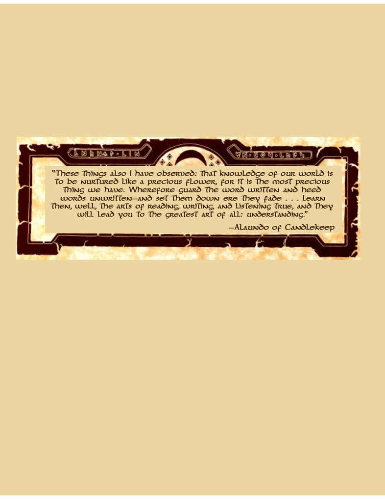

题词 · Epigraph

> “我还观察到这些事情：我们世界的知识应当像珍贵花朵一样受到培育，因为它是我们拥有的最珍贵之物。因此，守护写下的文字，也留意未写下的言语——趁它们消逝之前将其记录下来……好好学习阅读、书写和真实聆听的技艺，它们将引领你抵达一切艺术中最伟大的艺术：理解。” > > ——烛堡的阿兰多（Alaunndo of Candlekeep）
原书题词，。

> “我还观察到这些事情：我们世界的知识应当像珍贵花朵一样受到培育，因为它是我们拥有的最珍贵之物。因此，守护写下的文字，也留意未写下的言语——趁它们消逝之前将其记录下来……好好学习阅读、书写和真实聆听的技艺，它们将引领你抵达一切艺术中最伟大的艺术：理解。” > > ——烛堡的阿兰多（Alaunndo of Candlekeep）
原书题词，。